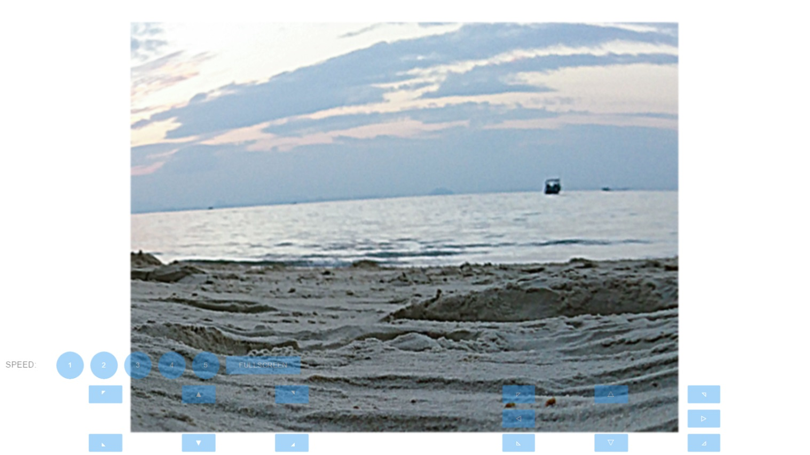
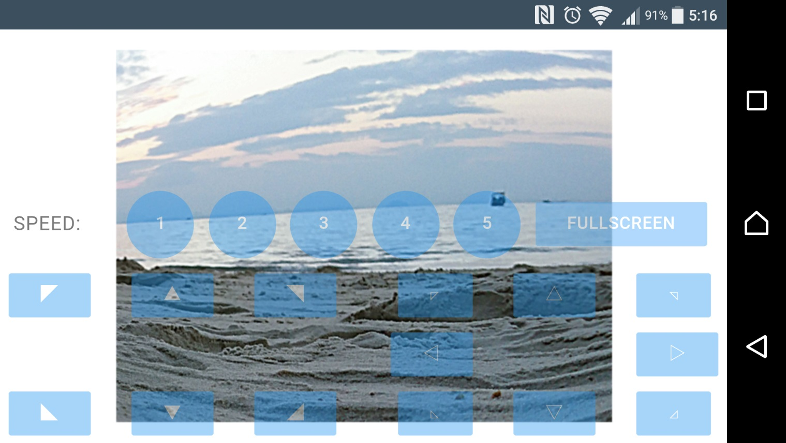

遠隔操作¶
これはこれから行うことである：
Raspberry Piを**サーバー**として使う。車を制御し、カメラでキャプチャした画像を送信するためのAPIを使用してWebサーバーを実行する。
次に、PC、携帯電話、タブレットを**クライアント**として、カメラから画像を取得し、WebサーバーのAPIを呼び出して車を制御します。
その後、再び車の電源を入れてください。最初のテストに時間がかかるため、Raspberry Piの電源アダプターを使用して車に電源を供給することも勧める。
サーバーを実行する（Raspberry Piでの操作）¶
Raspberry Piにリモートでログインする。**remote_control**ディレクトリの下で起動スクリプト**start**を実行して、Webサービスを開始する。
cd ~/SunFounder_PiCar-V/remote_control
python3 manage.py migrate
sudo ./start
スクリプトがサービスを有効にし、対応するデータが表示される。同時にハードウェアが初期化されるため、前輪に接続されているサーボとパン＆チルトが回転し、ハードウェアの初期化が完了したことを示す。

上記のような結果が得られれば、サーバーは準備できた。次に、クライアントを起動する。
警告
クライアントの実行を停止するまで、サーバーをいつも動作させる。
クライアントの実行（PCでの操作）¶
``http://<RPi_IP_address>:8000/``で車のサーバに訪問する。ウェルカムページが表示される：

LET'S ROCKをクリックして、操作インターフェイスに入る。

このページでは、キーボードの**W**、A、S、D**キーを押して、車を**前方、後方、左折、**右折**に制御したり、矢印キーを押してカメラの移動を制御したりすることができ、数値**1〜5**は速度レベルを変更する。
補正
もう一度**フルスクリーン**をクリックして、タイトルバーを表示する。次に、ページの右上隅にある設定ボタンをタップして、補正ページに進む。

補正には、カメラ補正、前輪補正、**後輪補正**の3つの部分が含まれている。
このページに入ると、車が前進する。そうでない場合は、**後輪補正**の**左**と**右**をクリックして、ホイールの角度を調整する。
携帯電話用
また、携帯電話の場合は、**フルスクリーン**ボタンをタップすると、表示とパフォーマンスが向上する。次に、ページ上の5つの速度レベルのボタンをタップして速度を制御し、矢印ボタンを押して車の方向とパン＆チルトを制御する。ただし、**一度**にタブできるのは1つのタッチポイントのみである。
{kind=link}
Android操作システムのスマートフォンから次のスクリーンショットを取得する。
{kind=link}
見た目はPCほど良くないかもしれないが、以降の更新は**Github**で不定期にリリースされる可能性がある。リポジトリを使い、変更を加えたプルリクエストを送信してください。テスト後に問題がなければ、リクエストを知ることは楽しみである。